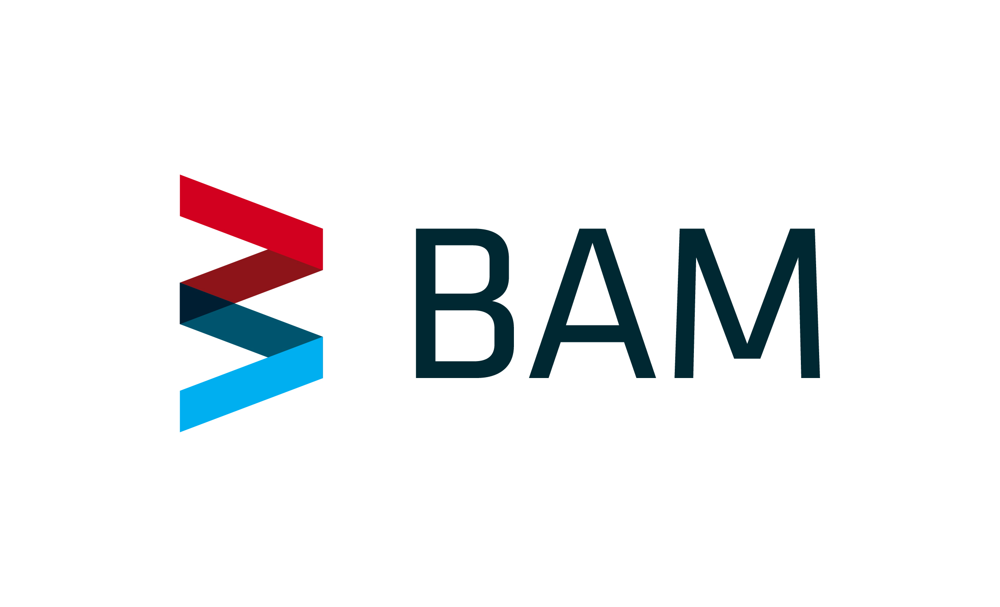

Critical
Core information is absent, invalid, or contradictory. Reproduction is not credible.

Input
No file loaded
Assessment
Select a MIF file to see documentation gaps, their severity, and how to resolve each alert.
Core information is absent, invalid, or contradictory. Reproduction is not credible.
An important experimental or analytical detail needs correction before publication.
An unusual value, weak description, or incomplete relationship should be checked.
Useful context would make the record easier to interpret, compare, or reuse.
A derived value or schema note that does not reduce the readiness score.